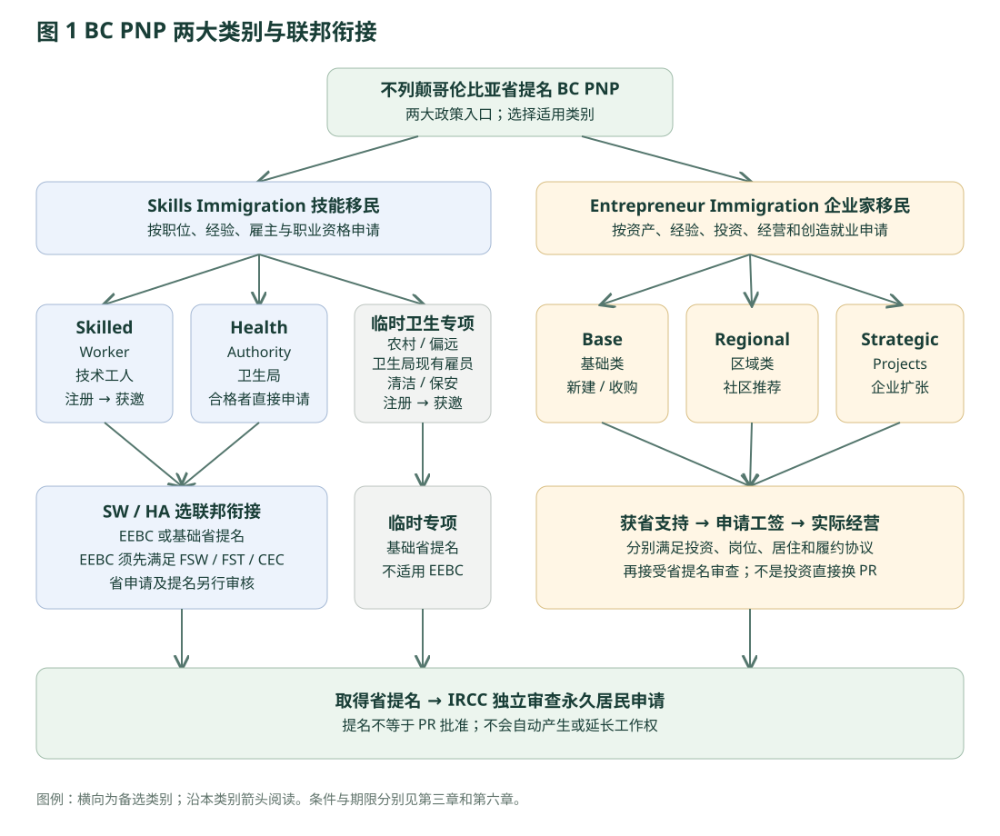

BC · 政府政策与留学路径研究
一 先看架构：BC PNP 的两个官方大类
BC PNP 的两个官方大类
BC PNP 由省政府选择符合本省经济与劳动力需求的申请人。取得省提名后，再由联邦 IRCC 审查永久居民申请。省政府的 Care、Build、Innovate 是政策与筛选方向，不是三个独立签证。官方总览与目标

打开原尺寸图 ↗本库绘制 · 非政府原图
{kind=link}
1.1 两大类下面的具体子类别
| 官方大类 | 具体入口 | 申请 / 筛选方式 | 关键边界 |
|---|---|---|---|
| Skills Immigration | Skilled Worker 技术工人 | 注册池 → 省邀请 → 申请 | TEER 0–3，合格offer及雇主；通常近十年两年技术工作；可选EEBC。 |
| Skills Immigration | Health Authority 卫生局 | 符合条件直接申请，无须SIRS注册池邀请 | 卫生局直接雇佣；医生、执业护士、助产士有专门支持形式；可选EEBC。 |
| Skills Immigration 临时专项 | Temporary Rural/Remote Health Support | 注册 → 获邀 → 基础省提名 | 现有卫生局直接雇佣清洁 / 保安；9个月合资格经验；非EEBC；截止2026-10-07。 |
| Entrepreneur Immigration | Base 基础类 | 登记商业构想 → 邀请 → 工签经营 → 提名 | 净资产60万、最低合资格投资20万；收购/新建及其他条件。 |
| Entrepreneur Immigration | Regional 区域类 | 参与社区考察与转介 → 邀请 → 工签经营 → 提名 | 净资产30万、最低投资10万；社区内新建，至少51%股权。 |
| Entrepreneur Immigration | Strategic Projects 战略项目 | 外国企业先与省府会面 → 受邀申请 → 实际运营 | 企业股权投资至少50万；最多5名关键员工，每名对应至少3个新公民/PR岗位。 |
1.2 关闭、历史与容易重复计算的名称
| 名称 | 当前如何处理 | 不可据此承诺 |
|---|---|---|
| Entry Level and Semi-Skilled / ELSS | 2026-04-23明确关闭；最后邀请2024-12-10 | 不能销售为新客户的餐饮酒店低技能BC路径。 |
| 旧 International Graduate / International Post-Graduate | 旧学生入口及存量安排按各自提交日期/历史指南；本轮不是新申请入口 | 持有旧案不等于2026新生可以复制旧硕博路径。 |
| 曾宣布的 Bachelor / Master / Doctorate 新类别 | 2026-04-23明确不会推出新学生类别 | 不要因2024/2025旧宣传而报名等通道开放。 |
| BC PNP Tech | 旧科技职业专属邀请最后一次为2024-12-03；相关职业不因此全部不合格 | Innovate高经济影响筛选与旧Tech邀请不一样；有限期offer例外仍单独核。 |
| EEBC、Care、Build、Innovate | EEBC是联邦衔接选项；后三者为政府筛选重点 | 不可各算成一条独立签证，再与SW/HA重复叠加。 |
1.3 在BC落地的联邦与社区通道
不经过BC省提名的联邦路线不能从BC目录中“消失”，也不能改名为BC省项目。全国联邦项目的详细条件继续使用联邦政府选项目录。这里展示与BC规划直接相关的接口。
| 入口 | 政府分工 | 与BC省提名的关系 |
|---|---|---|
| Express Entry：CEC / FSW / FST | 联邦资格、联邦邀请、联邦PR | 可独立规划；申请EEBC又须满足BC类别。不能以省CLB4代替联邦语言条件。 |
| RCIP：West Kootenay、North Okanagan Shuswap、Peace Liard | 指定雇主 + 社区推荐 + IRCC | 与省提名分开；具体职业/行业、名额及窗口在社区，不能抄BC优先表。 |
| FCIP：Kelowna | 法语社区、指定雇主、推荐及IRCC | 法语条件独立存在，不属于“英语一般即可”的替代。 |
| 家庭团聚、其他联邦经济及人道类别 | 根据真实家庭关系或法定事由适用联邦项目 | 进入全国目录逐项核。不得把特殊保护制度设计为普通留学移民产品。 |
| 临时工作许可、学签、PGWP | 联邦许可与身份管理 | 这些提供获批范围内的学习/工作权；本身不是PR批准。 |